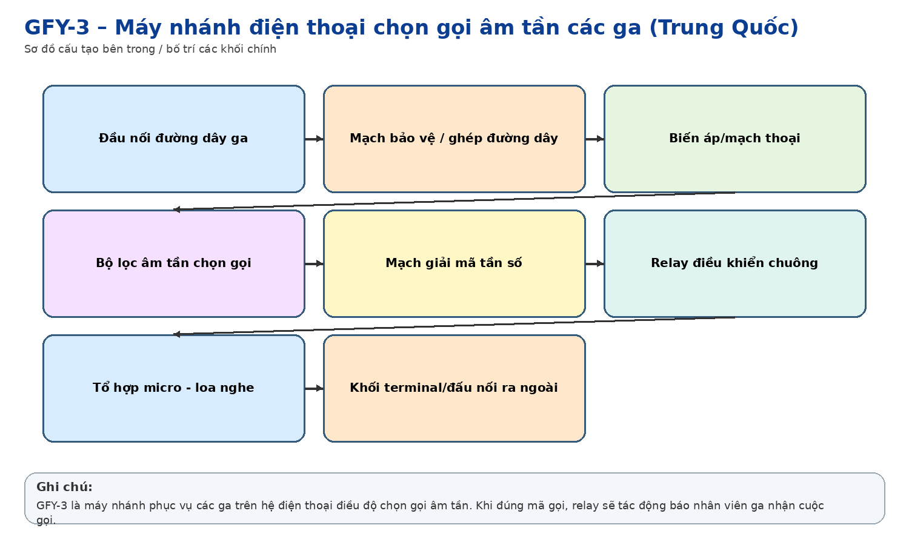
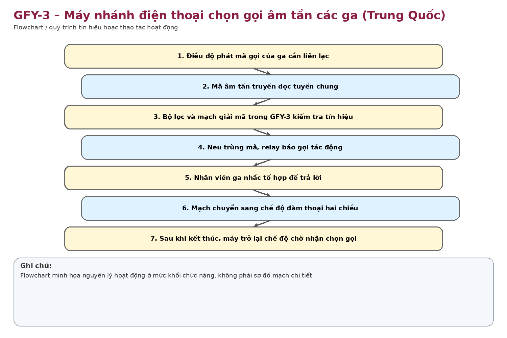
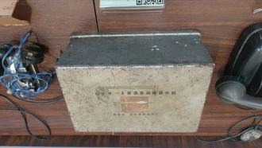

Nhận dạng & niên đại
Công dụng
Công dụng chung
Máy nhánh đặt tại ga trên mạng điện thoại chọn gọi âm tần. Nhận mã gọi dành cho ga mình, phát chuông/báo và kết nối thoại trên tuyến chung.
Trong thông tin tín hiệu đường sắt
Phục vụ điện thoại các ga/điều độ; cho phép một tổng đài gọi chọn từng ga trên cùng đường truyền, giảm số đôi dây cần thiết dọc tuyến.
Phạm vi làm việc
Thiết bị được thiết kế chuyên cho mạng đường sắt dùng chung tuyến, ưu tiên khả năng chọn gọi chính xác và bảo trì analog.
Cấu tạo bên trong

Hộp thiết bị; bộ lọc/chọn tần; detector; relay; mạch ghép đường dây; mạch báo gọi; đầu nối handset/chuông; các cụm dây và linh kiện analog. Ảnh 14 cho thấy một phần cụm linh kiện được tháo/lộ ra.
Cách thức hoạt động

Tín hiệu chọn gọi âm tần từ tổng đài đi trên đường dây chung. Bộ lọc của GFY-3 chỉ đáp ứng đúng mã/tổ hợp tần số đã định; relay tác động để báo gọi. Sau khi trả lời, thoại truyền trên cùng mạch.
Thông số kỹ thuật
Thông số chính
Chưa tìm được manual GFY-3 để chốt tần số chọn, điện áp và trở kháng. Model và nhà sản xuất đọc rõ trực tiếp trên nắp hiện vật.
Nguồn điện / cấp nguồn
Phụ thuộc cấu hình tổng đài/tuyến; có thể nhận nguồn từ mạch điều độ hoặc nguồn phụ trợ. Cần sơ đồ gốc để xác định.
Giá trị lịch sử – trưng bày
Giá trị trưng bày cao vì trên nắp ghi trực tiếp “Bộ Đường sắt” Trung Quốc; phản ánh công nghệ thiết bị chuyên ngành được sử dụng trong hệ thống thông tin đường sắt analog.
Tình trạng quan sát
Vỏ kim loại có trầy xước/oxy hóa; chữ model và nhà máy còn rõ; một số linh kiện/dây dẫn đang để rời.
Ảnh hiện vật

Xác minh thêm & nguồn tham khảo
Căn cứ mốc sử dụng tại Việt Nam/ĐSVN:
Ước
tính theo công nghệ và niên đại; cần chứng từ nhập/cấp phát.